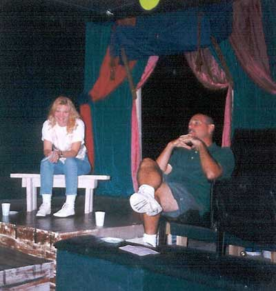

Jester-Knight
Literature
Film
Music
Visual Art
Tributes
Submissions
Links
Contact
Gerry Cullity (1953 - 2005)

Mentor. Friend. Actor. Writer. Director. For most of his life Gerry brought theatre to young people and adults alike. His talent was matched only by his passion for the work. Joey was lucky enough to meet Gerry right out of college and his true education in theatre began. Over the course of 5 memorable years they collaborated on over a dozen shows—musicals, dramas, comedies—for children and adults. Tonya worked with Gerry as well. He introduced them, and 11 happily married years later, his vision and passion continues to guide them.
Gerry’s influence, especially as a director, informs everything Joey has done as a professional in the theatre. His dictum to “raise the stakes” in all aspects of life, his continuous reminders that “Nothing matters. And Everything matters” and that “All things being equal, nothing is ever equal” continue to resonate in Joey’s personal and professional endeavors. Hundreds of his students and colleagues have heard these words and have no doubt been shaped by them as well.
Gerry’s work and legacy live on at Desert Stages Theatre.